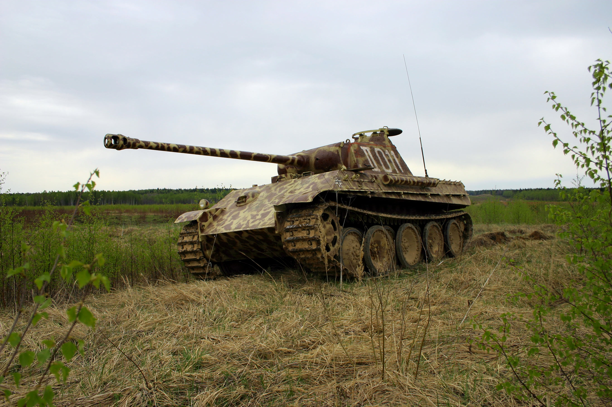

Az M1917 az Egyesült Államok első sorozatban gyártott harckocsija volt. A francia Renault FT mintájára fejlesztették ki az első világháború idején.
Az A7V volt az első világháború legismertebb német harckocsija. Hatalmas, szögletes páncéltesttel rendelkezett, és inkább egy lánctalpas páncélozott dobozra hasonlított, mint a mai tankokra.
Az M3 Stuart könnyű harckocsit elsősorban a gyors mozgásra és a felderítésre tervezték. A második világháború elején az amerikaiak és a britek is használták.
A Panzer I könnyű, kis méretű harckocsi volt, amely fontos szerepet játszott a német páncéloserők felépítésében az 1930-as években.
Az M3 Lee egy átmeneti megoldás volt, amelyet gyorsan kellett kifejleszteni, mert az amerikai hadseregnek nagyobb tűzerejű harckocsikra volt szüksége.
A Panzer II a Panzer I-nél fejlettebb könnyű harckocsi volt. Erősebb fegyverzetet és jobb képességeket kapott, ezért a háború első szakaszában fontos szerepet töltött be.
Az M4 Sherman az amerikai páncélosok egyik legismertebb típusa lett. Nem egyetlen kiemelkedő tulajdonsága, hanem a nagy sorozatban történő gyárthatóság, a karbantarthatóság és a megbízhatóság együttese tette fontossá.
Érdekesség, hogy a Shermanek egyes változatait a katonák a gyúlékony üzemanyag és lőszer miatti tűzveszélyre utaló, nem túl hízelgő becenevekkel is illették. Ez azonban nem jelentette azt, hogy minden Sherman ugyanúgy viselkedett volna: a különböző változatok eltérő műszaki megoldásokat alkalmaztak.
A Panzer III-at elsősorban más harckocsik elleni harcra tervezték. A háború során fokozatosan erősebb löveget és vastagabb páncélzatot kapott.
Érdekesség, hogy a Shermanek egyes változatait a katonák a gyúlékony üzemanyag és lőszer miatti tűzveszélyre utaló, nem túl hízelgő becenevekkel is illették. Ez azonban nem jelentette azt, hogy minden Sherman ugyanúgy viselkedett volna: a különböző változatok eltérő műszaki megoldásokat alkalmaztak.
Az M24 Chaffee-t azért fejlesztették ki, mert az M3 Stuart már nem felelt meg minden elvárásnak. Az új típus könnyű maradt, de erősebb löveget és korszerűbb futóművet kapott.
A Panzer IV eredetileg a gyalogság támogatására készült, de a folyamatos fejlesztéseknek köszönhetően a német hadsereg egyik legfontosabb harckocsijává vált.
Az M26 Pershing fejlesztését az a felismerés sürgette, hogy az amerikai hadseregnek a korábbi típusoknál erősebb páncélzatú és nagyobb tűzerejű harckocsira van szüksége. Eredetileg nehéz harckocsiként osztályozták, később azonban közepes harckocsiként tartották nyilván.
A Pershing egyik érdekessége, hogy eredetileg nehéz harckocsiként sorolták be, később azonban közepes harckocsivá minősítették át. Ez jól mutatja, hogy a harckocsik kategóriái a technika fejlődésével együtt változtak. A típus a koreai háborúban is fontos szerepet kapott, ahol már komolyabb harci tapasztalatokat szerzett.
A Tiger I a második világháború egyik leghíresebb német harckocsija lett. Erős páncélzatával és nagy teljesítményű lövegével komoly veszélyt jelentett az ellenséges páncélosokra.
A Tiger I-et nem tömeggyártásra optimalizálták úgy, mint a szovjet T-34-est vagy az amerikai Shermant. Nagy tömege, összetett műszaki rendszerei és jelentős karbantartási igénye miatt üzemeltetése nehéz volt. A harctéri eredményességét ezért nemcsak a fegyverzete és a páncélzata, hanem a megbízhatóság, az utánpótlás és a kezelőszemélyzet tapasztalata is befolyásolta.
Az M46 Patton a második világháború utáni amerikai harckocsifejlesztés egyik fontos állomása volt. A Pershing konstrukcióját korszerűsítették, nem teljesen új járművet építettek.
Az M46 különösen érdekes, mert jól példázza, hogyan lehet egy már meglévő harckocsit továbbfejleszteni ahelyett, hogy teljesen új típust terveznének. A koreai háborúban az amerikai erők többek között a szovjet gyártmányú T-34-85 harckocsikkal kerültek szembe. Az M46 erősebb lövege és korszerűsített hajtása segítette a feladatát ebben az időszakban. A típus ugyan nem készült olyan nagy számban, mint későbbi utódai, mégis fontos lépcsőfok volt az amerikai fő harckocsik fejlődésében.

A Panthert a keleti front tapasztalatai alapján fejlesztették ki, különösen a szovjet T-34-esek jelentette kihívásra reagálva. A németek nagy tűzerejű, jól védett, ugyanakkor mozgékony harckocsit akartak létrehozni.
A Panther gyakran jó példája annak, hogy egy harckocsi nem feltétlenül attól kiváló, hogy minden tulajdonságában a legerősebb. A hosszú csövű löveg, a döntött páncélzat és a viszonylag jó mozgékonyság együtt hatékony konstrukciót eredményezett. Ugyanakkor a bonyolult hajtásrendszer és a korai műszaki hibák rontották a hadrafoghatóságát. A Pantherből a háború alatt több ezer példány készült.
Az M48 Patton a hidegháború egyik legismertebb amerikai harckocsija volt. Új, lekerekített kialakítású tornya és öntött páncélteste jól megkülönböztette a korábbi típusoktól.
Az M48 nemcsak az amerikai hadseregben vált fontossá: számos szövetséges ország is rendszeresítette. Egyes változatait évtizedeken át használták, sőt több országban modernizálták is. A vietnámi háborúban a harckocsi a dzsungeles terep ellenére is alkalmazható volt, különösen a gyalogság támogatására és a fontosabb utak, támaszpontok védelmére. A típus fejlesztése során szerzett tapasztalatok a későbbi amerikai harckocsik kialakítására is hatottak.
A Tiger II, közismert nevén Königstiger vagy „Királytigris”, a német nehézharckocsi-fejlesztés egyik legnagyobb és legerősebben felfegyverzett sorozatban gyártott eredménye volt.
A Királytigris erős páncélzatát és lövegét rendkívül nagy tömeg kísérte. Emiatt a hidak teherbírása, a megfelelő üzemanyag biztosítása, a javítás és a szállítás komoly nehézségeket jelentett. A német ipar a háború végéig csak körülbelül 490–500 darabot tudott előállítani belőle.
Ez jól mutatja a nehéz harckocsik egyik alapvető problémáját: a rendkívüli harci képességek önmagukban nem garantálják, hogy egy járműből elegendő példány áll majd rendelkezésre, és azokat folyamatosan üzemképesen is lehet tartani.
Az M60 az amerikai hadsereg egyik meghatározó harckocsija lett a hidegháború évtizedeiben. Bár szorosan kapcsolódott az M48-hoz, erősebb főfegyverrel és takarékosabb dízelmotorral rendelkezett.
Az M60 egyik legérdekesebb tulajdonsága a hosszú élettartama. Bár az amerikai hadseregben később az Abrams váltotta fel, más országokban továbbra is szolgálatban maradt, gyakran jelentős modernizációk után. Az M60A3 változat például korszerűbb tűzvezető rendszert és lézeres távolságmérőt kapott. Ez segítette a személyzetet abban, hogy pontosabban határozza meg a cél távolságát, és hatékonyabban használja a főfegyvert.
A második világháború után Nyugat-Németország ismét saját harckocsik fejlesztésébe kezdett. Ennek egyik legfontosabb eredménye a Leopard 1 lett, amelyet a Bundeswehr 1965-ben kapott meg.
A Leopard 1 nem a második világháborús német nehézharckocsik közvetlen folytatása volt. Egy új korszak követelményeire válaszolt: az erős löveg, a korszerű célzórendszerek és a jó mozgékonyság került előtérbe.
A típusból több mint 4700 készült különböző változatokban. A Leopard 1 emellett számos műszaki alapot adott különféle műszaki mentő-, hídvető és más támogató járműveknek is.
Az M1 Abrams az amerikai hadsereg legismertebb modern harckocsija. Fejlesztése során a mérnökök a korábbi típusok tapasztalatait új páncélzati, hajtási és elektronikai megoldásokkal ötvözték.
Az Abrams nevét Creighton Abrams tábornokról kapta. A harckocsi összetett páncélzata, fejlett célzórendszerei és erős lövege jelentős előrelépést jelentettek a korábbi amerikai típusokhoz képest. Az 1991-es öbölháború során az Abrams a koalíciós erők páncélos hadműveleteinek egyik meghatározó járműve volt. Azóta az M1A1 és M1A2 változatok több korszerűsítésen estek át, így a típus a modern amerikai páncéloserők fontos eleme maradt.
A Leopard 2 a Leopard 1 továbbfejlesztésének egyszerű folytatása helyett lényegében új harckocsi lett. Erősebb páncélvédelmet, nagyobb tűzerőt és fejlettebb célzórendszereket kapott.
A Leopard 2 nem csupán a lövegével vagy a páncélzatával vált jelentőssé, hanem azzal is, hogy folyamatosan korszerűsíthető maradt. A modern változatok fejlettebb hőkamerákat, digitális rendszereket, javított védelmet és korszerűbb kezelői eszközöket kaptak.
A Leopard 2A7V például olyan fejlesztéseket tartalmaz, amelyek javítják a személyzet helyzetfelismerését és a jármű használhatóságát éjszaka vagy rossz látási viszonyok között. A típus több országban is rendszerben áll, így a német harckocsigyártás egyik legismertebb nemzetközi képviselője lett.